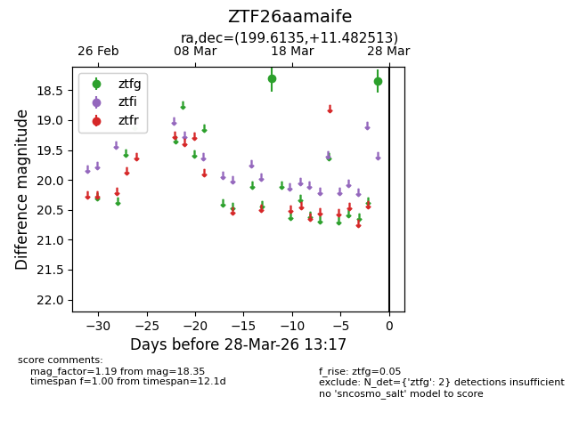
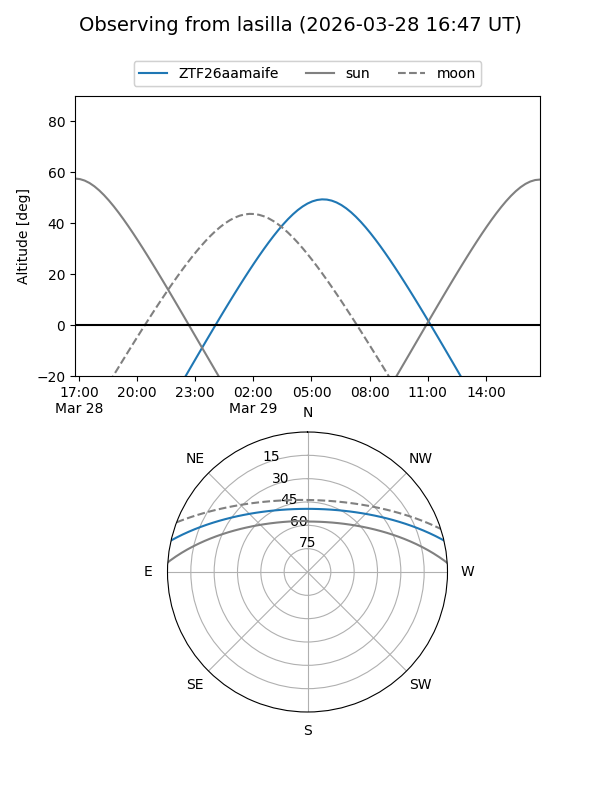
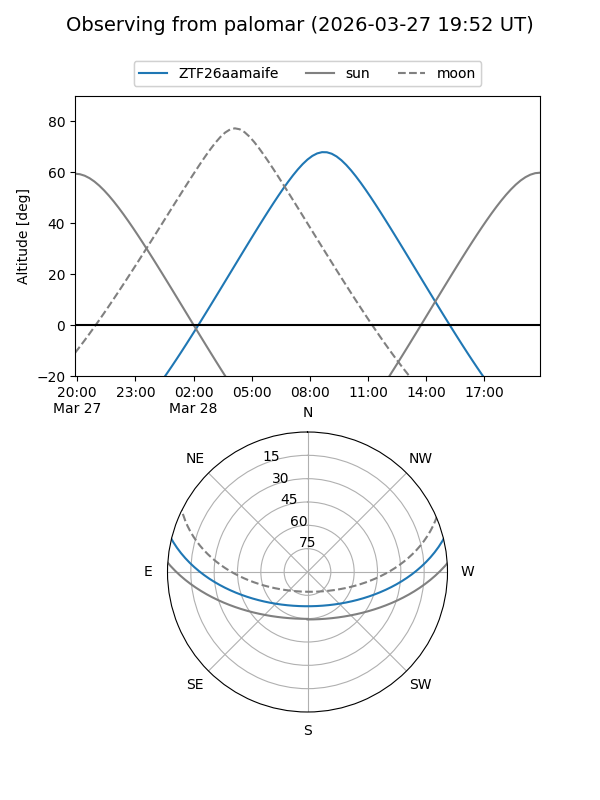

ZTF26aamaife
Target ZTF26aamaife at 2026-03-28 13:20
Aliases and brokers:
FINK: link
Lasair: link
ALeRCE: link
alt names
ZTF26aamaife (ztf,fink_ztf)
Coordinates:
equatorial (ra, dec) = 199.6135,+11.48251
equatorial (HMS+DMS) = 13:18:27.25,+11:28:57.05
galactic (l, b) = (326.3122,+73.11601)
Flags:
Photometry:
last ztfg=18.35
2 ztfg detections
Lightcurve

Visibility


Additional plots